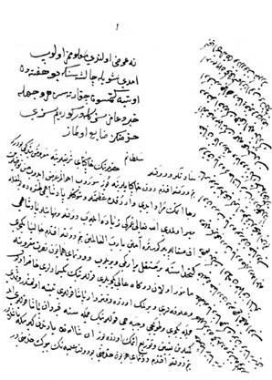

Belge 15: TKSA E.7002/52, veziriâzam ‘arzı
Belge 15
Özet:
Pâdişahımız taşrada olduğundan ‘arzda bulunamadık. Tanrı pâdişahımıza uzun ömür versin. Donanmaya gidecek yeniçerilerin peksimed ve ulûfeleri için defterdâr paşa uyarılmıştır. Kethüda’ya verilen tüm yeniçeri, topçu ve cebecilerin gemilere bindirilmesi için kapudân paşa ile görüşmekteyiz. Donanma işi devletin büyük işidir. Kalyon için akça ve mühimmat verilmiştir. Hepsi 24 çekdirme, 14 burton yapılacak, öteki burtonlar kira ile alınacak. Bunlar yeniden tedârik edilmiştir. Yeniçeriler yerleşir yerleşmez donanma hareket edecek.
H.H.:
“Ne ‘arz olundu, ma’lûmumuz olub imdi şöyle çalışasın ki bu haftadan öteye gitmesün, çıkartasız, her vechile hayr du’âmız sizinledir, göreyim sizi, hidmetiniz zayi’ olmaz.”
Yorum:
Kapudân paşa Boğaz’dan Ege’ye çıktı.40Venediklilerin 24 kalyonuyla Boğaz önünde savaşa tutuştular. Paşa, yarar gemileri Midilli tarafına göndermiş, donanmadaki yeniçeriler savaşa katılmadılar, “derinti asker” olduklarından disiplin yoktu. Paşanın cengine seyirci oldular. Kapudân paşa Foça limanından çıkıp Venedik donanması ile savaşa tutuştu, çok adam kaybetti, Rodos’a çekildi (1649 yazı).
1650 Haziran’ında 30 kalyon, 38 kadırga ve burton ile yeni donanma kapudân Ali Paşa kumandasında Boğaz’dan dışarı çıktı. Sakız’a vardı (Temmuz).41Donanmada yeniçeriler vardı. Nakşa Adaları yakınında Değirmenlik Boğazı’nda Venedik donanmasıyla karşılaştı, büyük bir deniz savaşı oldu. Yeniçeriler işbirliği yapmadılar. Donanma kayıplarla Rodos’a çekildi.
Yayınladığımız belge donanmanın hazırlık dönemine 1650 kış veya baharına ait olmalıdır. Kösem bu tarihte henüz iktidardadır.